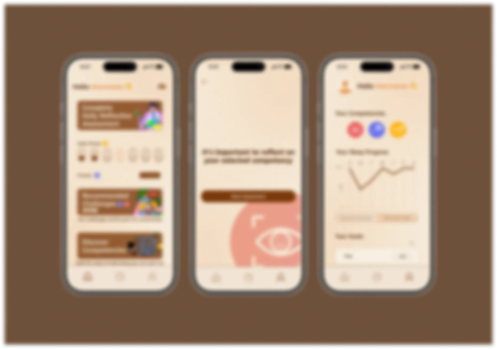
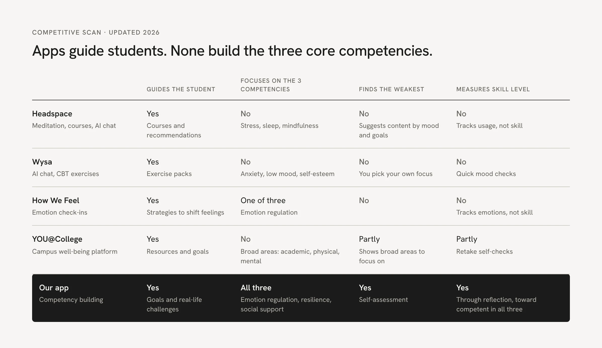
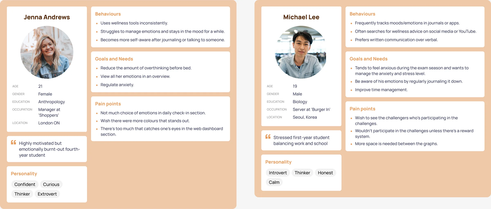
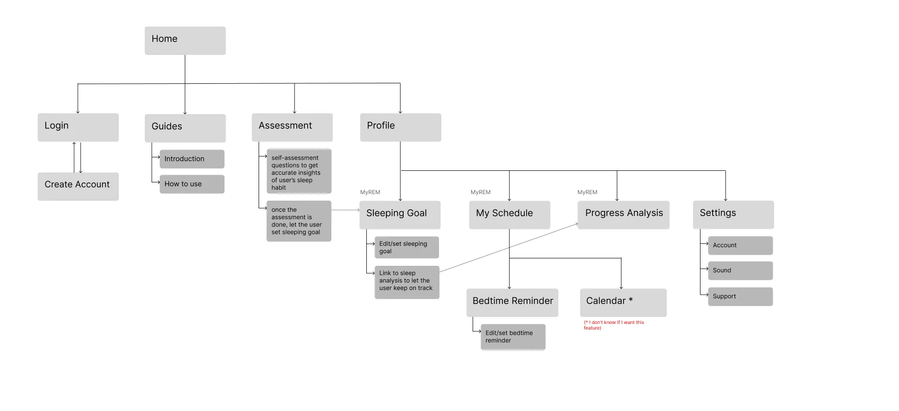
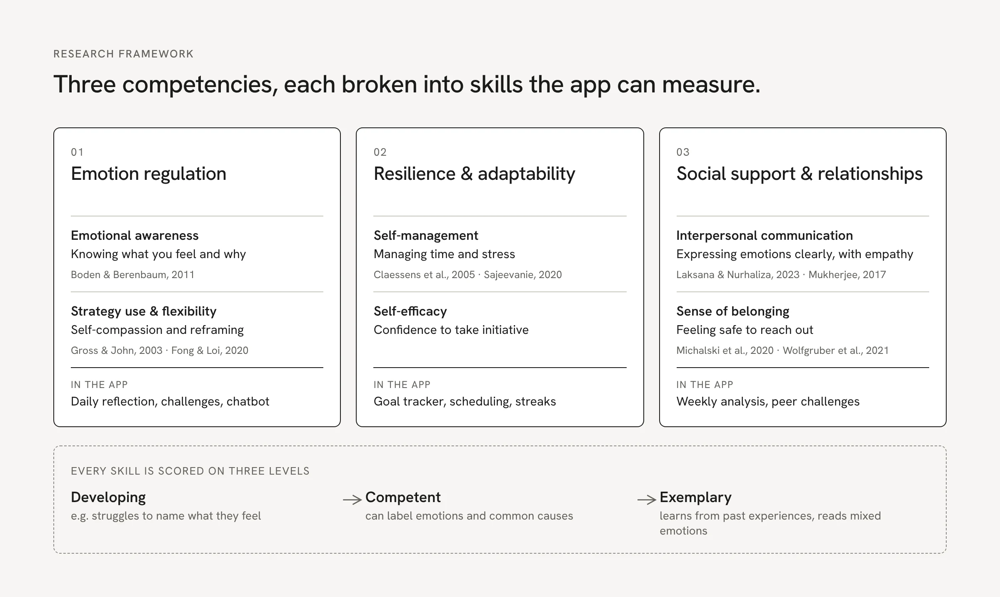
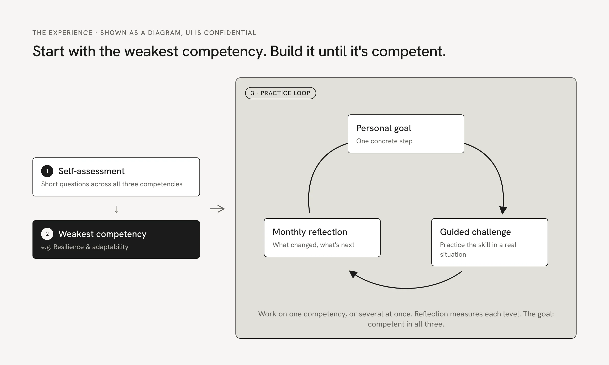
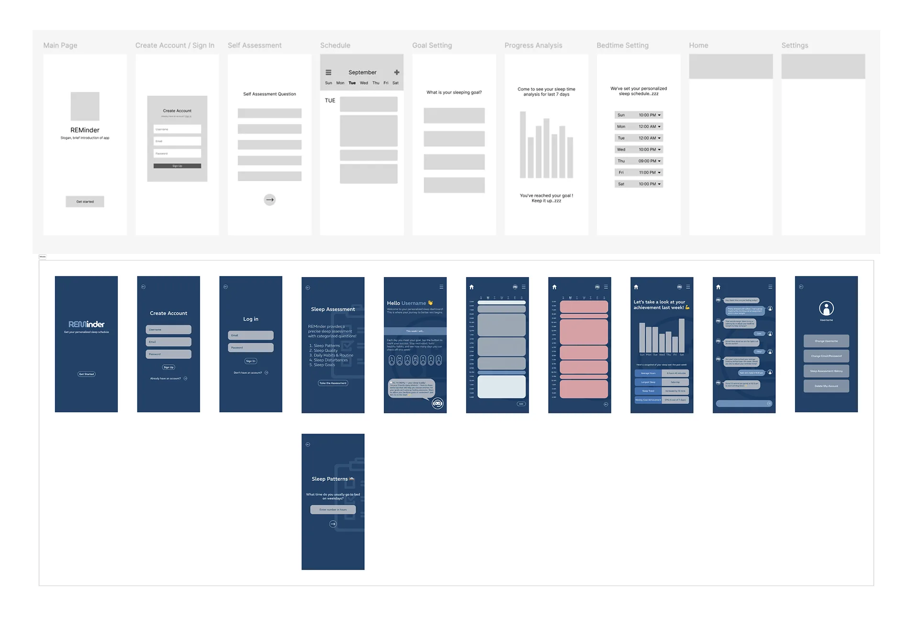
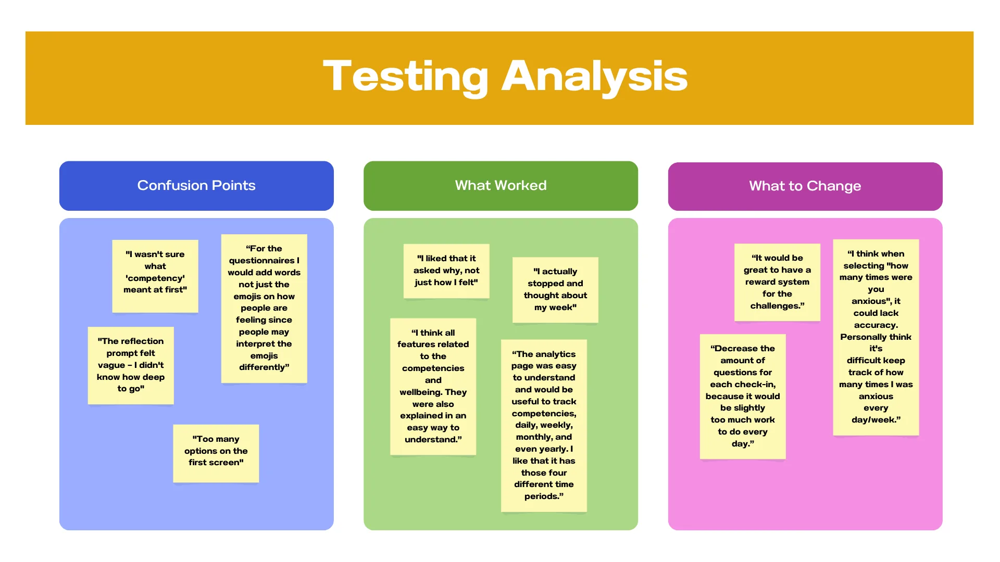
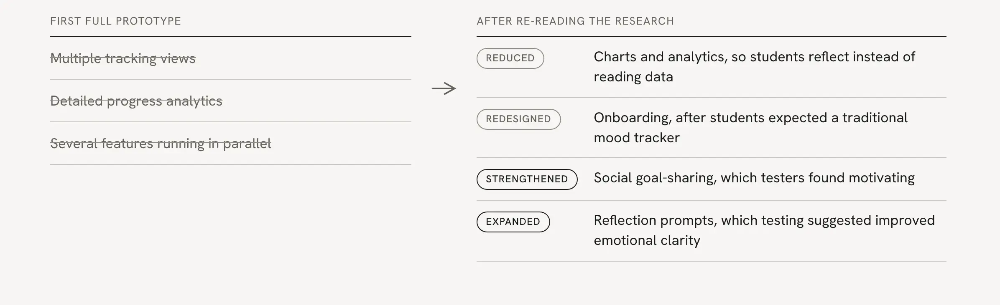
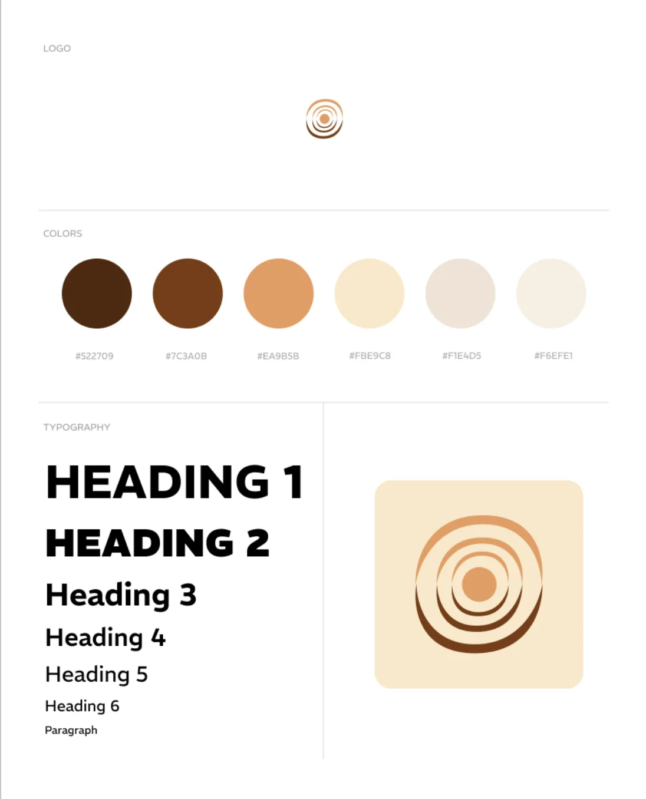

Student Well‑being App
A student well-being app that goes beyond logging feelings. A short self-assessment finds which of three research-backed competencies a student is weakest in, then a structured path helps them build it. During my internship I owned the research, journey maps and design, with senior UX designers reviewing each round.
- Role
- UX researcher & designer (intern)
- Owned
- Research, journey maps, UX and Figma design
- Timeline
- 17 weeks, summer 2025
- Team
- Senior UX designers (review), education faculty, senior developers
- Methods
- Literature review, surveys, journey mapping, think-aloud testing
- Status
- Design complete, development ongoing
Problem
Well-being apps help students log how they feel, but none build all three competencies behind well-being, or find which one a student is weakest in.
Solution
A short self-assessment finds the weakest of three research-backed competencies. Goals and real-life challenges build it, and reflection tracks the level, until all three are competent.
Outcome
Tested with 18 students: 13 said it would support their daily well-being. Design complete, in development.

Problem
Well-being apps help students reflect, but never guide them to be fully competent in the skill they need to build.
Research links student well-being to three competencies: emotion regulation, resilience & adaptability and social support. Existing apps offer exercises and advice, but none cover all three, find which one a student lacks, or measure it improving.
Rating my mood feels pointless when nothing changes after.
Pre-survey, studentThe app I'm using is suggesting me tasks to do but I am unsure if that will actually help.
Pre-survey, student

Who it's for
Students who already notice they're struggling, but don't know what to do next.
Jenna is a burnt-out fourth-year student who knows something is off. Michael is a first-year balancing work and school who doesn't know where to start. Both need a starting point more than another place to record how they feel.

First pivot
We started with sleep tracking. The research talked us out of it.
Sleep felt like the obvious, safe lever for student well-being, and we got as far as a full sitemap. But the literature review kept pulling us away: sleep only explained part of the picture. Emotion regulation, resilience and social support mattered just as much.
Sleep tracking was also already crowded, so it wouldn't have closed the gap we'd found.

Insight
Students don't need another journal. They need guided practice in three skills.
The literature review pointed to three competencies as the real drivers of student well-being. Logging a feeling builds none of them, but guided practice can.
- Emotion regulationNoticing and managing your emotions before they build up.
- Resilience & adaptabilityManaging time and stress, and recovering from setbacks.
- Social support & relationshipsCommunicating clearly and feeling safe to reach out.
Before designing any screens, I broke each competency into measurable skills, defined three levels of progress for each one from the literature, and mapped every skill to an app feature. That turned an academic framework into something the app could score and build on.

The experience
Start with the weakest competency. Build it until it's competent.
A short self-assessment surfaces the competency a student is weakest in. Personal goals and guided challenges they apply in real life build it, and monthly reflection measures their level. Students can work on several competencies at once or switch over time. The goal is to be competent in all three.


Testing
We measured whether students thought differently about their emotions, not just whether they finished tasks.
Each session combined a pre-survey, a think-aloud walkthrough and a post-survey. We then grouped what we heard into what confused people, what worked and what to change.
- Asking “why” worked“I liked that it asked why, not just how I felt.”Another student said they actually stopped and thought about their week.
- Jargon got in the way“I wasn't sure what ‘competency’ meant at first.”
- Too much at once“Too many options on the first screen.”This was the first sign of the bigger problem below.

Second pivot
Testing showed we had added too much. We cut back to the core.
The comment that stopped the team
"This feels like it's lost its purpose. I don't even understand what the app is about."
Our first full prototype had multiple tracking views, detailed progress analytics and several features running in parallel. We re-read the literature review against our original goal. Most of what we'd added didn't serve it, so we cut it.

Visual system
A style guide kept 100+ screens consistent, and calmer than the first draft.
A style guide of colour palette and icon set, so every screen followed the same rules for colour, type and icons. We also moved from the navy low-fidelity look to warmer, calmer colours that suit the subject.

Status
Research and design are done; the backend and a chatbot are being built.
- DoneResearch, design and a round of testing.
- In progressBackend and chatbot development.
- SharedPresented at a research-focused virtual conference.
Reflection
My first UX project, and the habit I kept from it.
I learned that research does more than inform the first design. It keeps the whole team on the core goal. When our prototype lost focus, the literature review showed us what to cut. I’ve carried that into every project since, starting with research before the first screen.